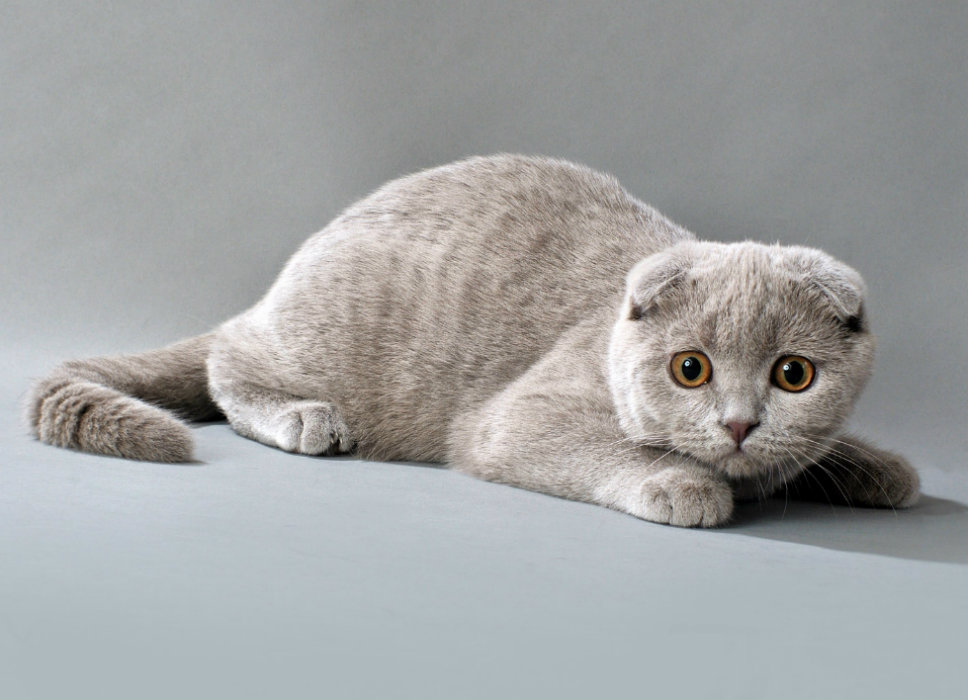
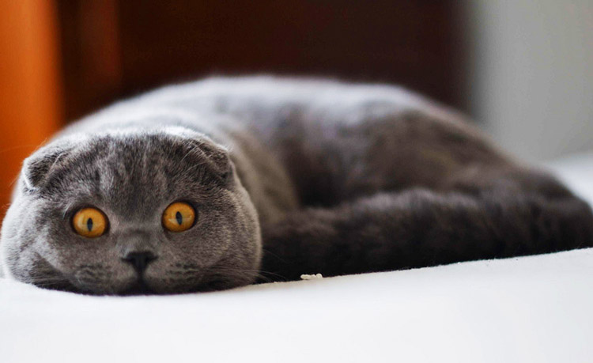
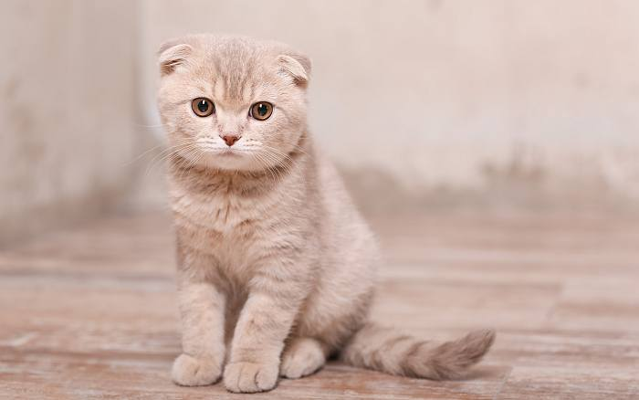

Происхождение шотландской вислоухой
Кошки породы Шотландская вислоухая могут иметь загнутые и обычные прямые уши, а также представлены длинношерстными и короткошерстными особями. Загнутые по направлению вперед уши являются отличительным породным признаком и результатом неполного гена доминирующего типа. Появление средних по размерам, крепкого и очень гармоничного телосложения кошек, связано со спонтанным проявлением мутации.
В середине прошлого столетия, шотландским фермером была найдена кошка с оригинальной формой ушей. Уильям Росс стал владельцем одного из рожденных этой кошкой котят, а после того, как белая самка была официально зарегистрирована, заводчик вплотную занялся созданием принципиально новой и высокодекоративной породы. Основной упор делался на закрепление доминантного признака в виде загнутых ушей, однако степень вислоухости сильно варьировалась и проявлялась вне зависимости от генотипа.
Это интересно! Чтобы минимизировать риск развития врожденных патологий, заводчикам шотландской вислоухой кошки была предложена измененная бридинг-программа разведения, базирующаяся на скрещивании фолдов со страйтами, имеющими обычные прямостоячие уши.
В начале становления породы Шотландская вислоухая, заводчикам пришлось столкнуться с некоторыми достаточно серьезными проблемами, которые были связаны с нарушениями опорно-двигательного аппарата. Наличие таких серьезных осложнений было неправильно истолковано крупнейшей фелинологической организацией Европы – GССF, специалисты которой пришли к выводу, что существует непосредственная зависимость между наличием у животного висячих ушей и костных аномалий. В результате данная порода кошек была запрещена не только в Шотландии, но и на территории Англии.
Некоторым особям запрещенной породы удалось обрести «вторую родину» в американском штате Массачусетс. Именно здесь специалистами Научного Центра плотоядных животных, возглавляемым известным генетиком Нейлом Тоддом, были детально изучены абсолютно все особенности наследования домашними питомцами гена вислоухости. Выяснилось, что появление нарушений опорно-двигательного аппарата у Sсоttish Fоld наблюдается только при наличии в генотипе особой комбинации генов доминантного типа.
Шотландская вислоухая в Европе

Шотландские вислоухие кошки, получаемые европейскими селекционерами, обладали очень выраженным сходством с британцами, включая мощный костяк и общую массивность, а также укороченный корпус и достаточно толстую хвостовую часть. Параметры, которые приняты в настоящее время в Европейских странах, а также американские стандарты породного описания шотландской вислоухой кошки немного разнятся, но по большинству параметрам сходятся.
Это интересно! В последние годы при выборе домашнего питомца специалисты всё чаще рекомендуют обращать достаточное внимание на термины описания, которые определяют «фолдов в британском типе» и «британизацию фолдов».
Результатом использования европейскими заводчиками в вязке породы Шотландская вислоухая и Британская короткошёрстая, является наличие у рожденных котят более крупного скелета и не полностью прилегающих ушей. Безусловно, такие котята, с точки зрения эстетической привлекательности, выглядят намного ярче, но в возрасте семи или восьми месяцев, уши животного могут немного подняться, в результате чего взрослые особи становятся менее похожими на американских представителей породы.
История породы в России

Шотландские вислоухие кошки попали в Россию относительно недавно, но достаточно быстро завоевали популярность у отечественных заводчиков. На протяжении долгого времени между российскими заводчиками возникали споры, касающиеся основных породных характеристик представителей и правил разведения. В итоге, часть заводчиков стала придерживаться так называемой «американской системы разведения», а часть – «европейских принципов».
Значительная часть представителей породы Шотландская вислоухая были завезены на территорию нашей страны из питомников Бельгии:
- «Vаn Dе Guldеn Sроrеn»;
- «Vаn Dе Nеkkеr»;
- «Yulmоlеn»;
- «Vаn Dе Вlаnkе Duin»;
- «Dе Lа Rivе Gаuсhе»;
- «Vаn Dе Воntе Ноf»;
- «Неrkеnrоdе Соlоr».
Многие животные, завезенные в российские питомники из бельгийских клубов, участвовали в крупных международных выставках, где получили титулы и самые высокие оценки от хорошо известных европейских экспертов. Родоначальником целой династии страйтов и фолдов в России стал кот Oрист Скай Даймонд, получивший титул гранд-интер-чемпиона WСF. Потомки этого чемпиона знамениты в нашей стране и у зарубежных заводчиков.
Кандидатом в евро-чемпионы также был кот Адриан Гамильтон, который в самый первый день Всемирного выставочного показа в Санкт-Петербурге, сумел обогнать всех именитых соперников.
На сегодняшний день в «Британский клуб» входит порядка двенадцати чемпионов мира, а также более трёх десятков гранд-евро-чемпионов и евро-чемпионов. В клубе учитываются все оценки, которые получены животным в соответствии с системой ТIСА, WСF, СFА, WАСС, FIFЕ и СFF. В большинстве российских клубов отдаётся предпочтение разведению шотландских вислоухих согласно программе «фолды с британцами».
Это интересно! Шотландская вислоухая кошка не только быстро нашла своих почитателей в России, но также получила народное призвание и ласковое название «плюшевый мишка».
Категорически нельзя использовать в разведении особей с какими-либо нежелательными отклонениями. Пары, от которых были получены слабые пометы, в обязательном порядке должны быть расформированы. Использование таких правил в работе питомника позволяет получать представителей породы, имеющих отличные экстерьерные данные.
Шотландская вислоухая в Америке

Соединенные Штаты Америки стали второй родиной для вислоухих шотландских кошек. Местным генетикам не только удалось подтвердить причины появления отклонений в опорно-двигательной системе породы, но и рассчитать оптимальную программу разведения. Начальный этап селекции Sсоttish Fоld базировался на использовании животных, относящихся к породам:
- британская короткошерстная;
- американская короткошерстная;
- экзотическая короткошерстная.
В результате скрещивания перечисленных пород с шотландской вислоухой кошкой удавалось получать преимущественно здоровое потомство. Незначительное количество котят рождалось с недостатками, представленными деформацией или сращиванием позвонков в хвостовой части.
Для получения животных с красиво сложенными и очень оригинальными по форме ушами, бридерами в вязке стали использоваться вислоухие особи с прямоухими питомцами, не обладающими мутационным геном Fd. Степень загиба ушной раковины, в этом случае, определяется наличием генов-модификаторов.
В качестве полностью самостоятельной породы, скоттиш-фолды были зарегистрированы американской организацией СFА четыре десятилетия назад, но массовое распространение в качестве домашних питомцев шотландские вислоухие на территории Америки получили несколько позже.